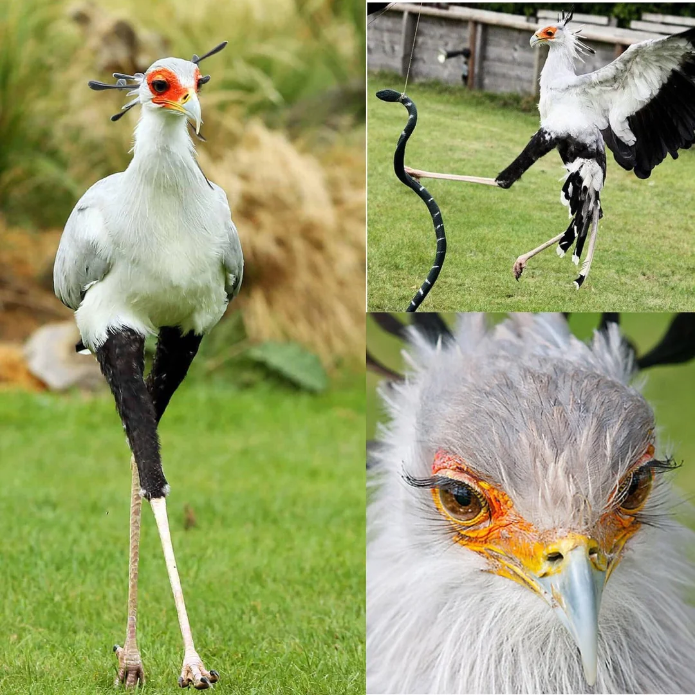

Secretary Birds are awesome because they are powerful, ground-dwelling hunters known for their signature method of stomping venomous snakes to death with powerful, precise kicks, even overpowering cobras. They have long legs covered in protective scales to deflect venomous strikes, and they use their large wingspans to distract prey. Beyond snake hunting, they are also adept at hunting other prey like insects and rodents by stamping on the ground, and they can cover up to 32km a day searching for food.
hooheehooo I'm a ghost